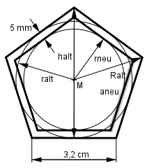

Aufgabe 207 Ein zu groß geratenes Blech (regelmäßiges Fünfeck) wird so bearbeitet, dass parallel zu den Seiten Streifen von 5 mm wegfallen. Wie groß sind die Fläche A und die Seitenlänge s des neuen Fünfecks?

Herleitung siehe Aufgabe 106: aalt halt = ----- * 3,078 2 aalt Ralt = ----- * 3,40 4 ralt = halt - Ralt 3,2 cm 3,2 cm ralt= --------- * 3,078 - --------- * 3,40 = 2 4 = 2,2 cm rneu = ralt – 0,5 cm = 2,2 cm – 0,5 cm = 1,7 cm aneu aneu rneu = ------ * 3,078 - ------ * 3,40 2 4 rneu = aneu * 1,539 - aneu * 0,85 1,7 = aneu * 0,689 |:0,689 aneu = 2,5 cm = s rneu * aneu 1,7 cm * 2,5 cm A = 5 * ------------- = 5 * ----------------- = 2 2 = 10,6 cm2